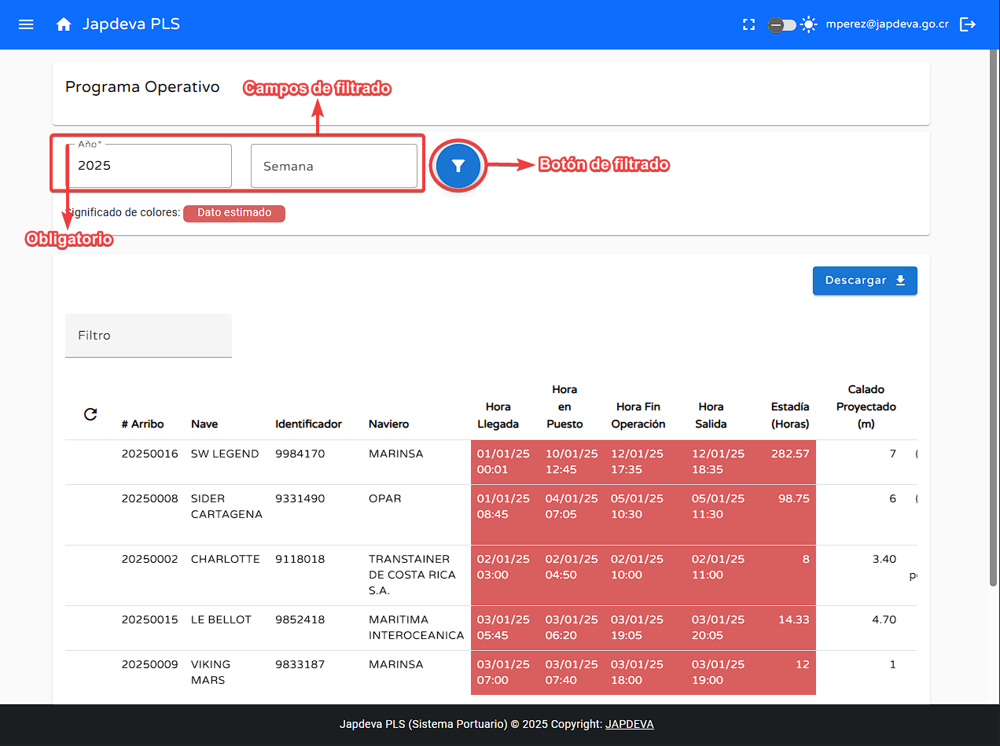
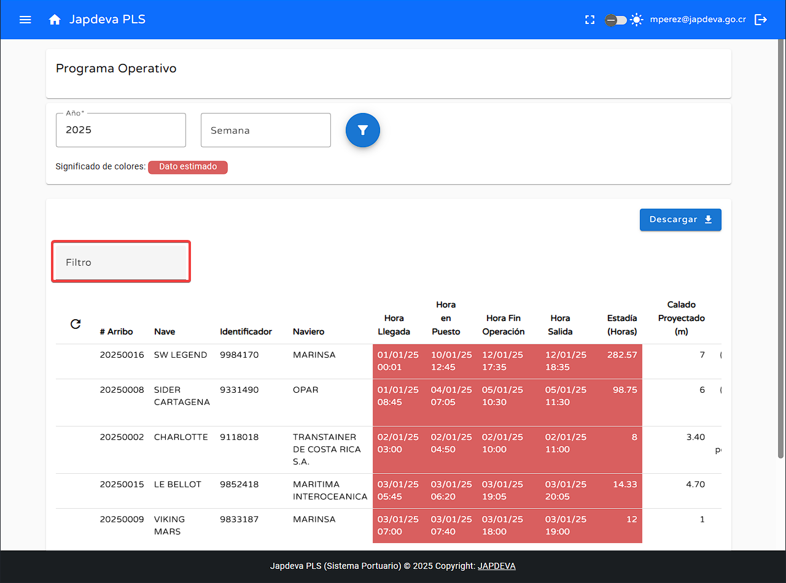
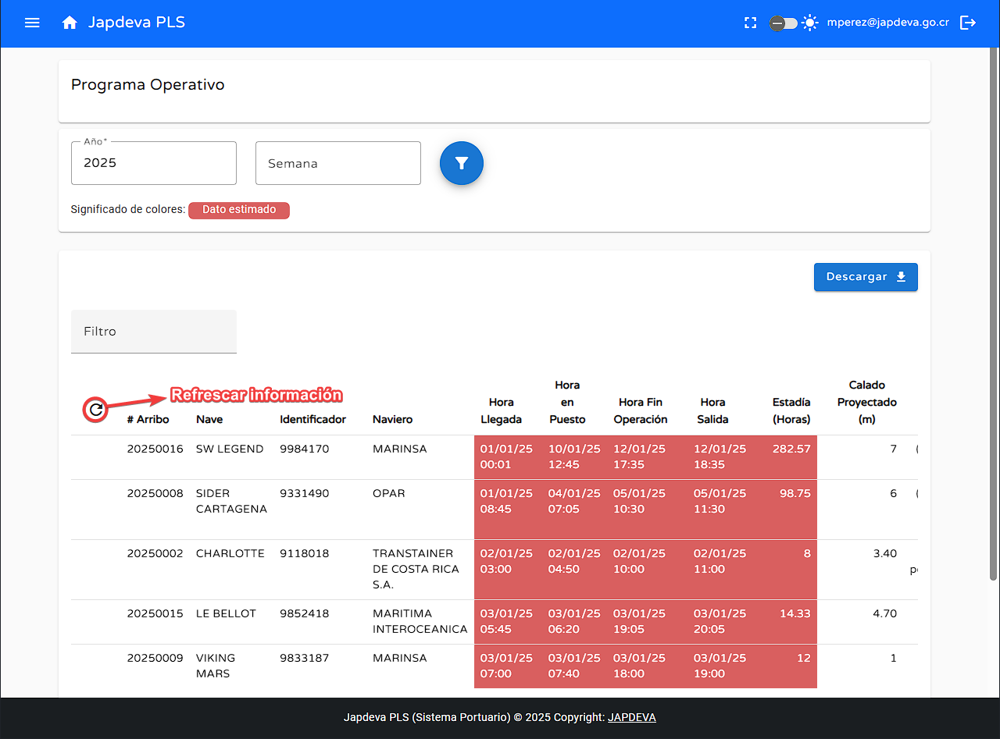
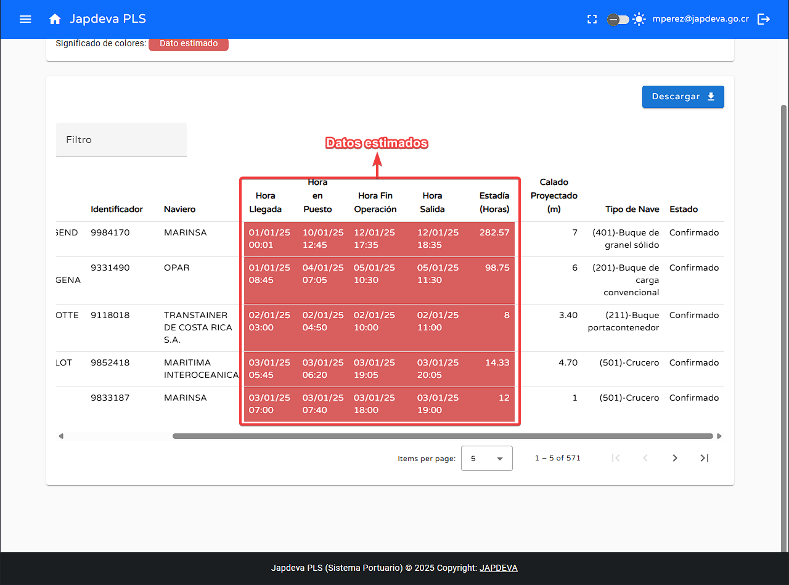

2
Visualización de información en pantalla de Programa Operativo
Como se puede observar de primera mano la pantalla actual solamente proyecta información previamente
registrada en otros sistemas de la empresa y no permite la edición de datos
por ende funciona solamente como una vista de datos aunque tiene funciones básicas de búsqueda y
filtrado.
- La primera función básica que podemos encontrar es el filtrado por año y
semana donde el único campo obligatorio que solicita esta sección es el de
año
y que una vez se rellenen los campos estipulados se realiza el filtro dando clic en el ícono de
filtro que se encuentra al lado del campo de semana.

Advertencia: El campo de año es de índole obligatorio en todo
filtrado a realizar. Además de que ambos campos solamente permiten el ingreso de números.
- La segunda función básica de filtrado se encuetra en un espacio llamado Filtro el
cual como su nombre indica, permite filtrar por los diversos campos que posee
el programa operativo.

- Dentro de las escasas funciones de esta pantalla se encuentra la de Refrescar la
cual funciona en tiempo real refrescando la información al momento con la última información
registrada en el sistema.

- Dentro de está pantalla se encuentra un cúmulo de datos e información valiosa la cuál se explicara a
continuación de manera resumida(yendo de izquierda a
derecha):
- # de arribo: Identificador único brindado por la empresa a las diversas
embarcaciones que se compone por el año y un número de consecutivo.
- Nave: Nombre de la embarcación registrado en el sistema.
- Calado: Este dato debe ser proyectado en metros.
- Identificador: Número de identificación a nivel internacional que posee la
embarcación, por lo general se usa el IMO, pero se puede hacer uso de
cualquiera siempre y cuando cumpla con las normas internacionales.
- Naviero: Nombre de la empresa que posee la embarcación.
- Hora llegada: Reconocido como E.T.A (Estimated Time of Arrival) es la hora
esperada de llegada de la embarcación a bahía.
- Hora en puesto: Reconocido como A.T.B (Actual Time of Berthing) es la hora en
que el navio se encuentra en el puesto designado.
- Hora fin operación: Reconocido como E.T.C (Estimated Time of Completion) es la
hora estimada de finalización de la operación.
- Hora salida: E.T.D (Estimated Time of Departure) es la hora estimada de salida
de la embarcación.
- Estadía (Horas): Es el tiempo estimado que necesita estar la embarcación para
cumplir todos los requisitos de la operación.
- Calado proyectado: Profundidad máxima necesaria para que el barco pueda
maniobrar libremente en el agua en metros.
- Tipo de nave: Marca la diferencia entre las distintas clases de embarcaciones,
por ejemplo: Portacontenedor, crucero, granel sólido.
- Estado: Refleja de manera clara el estado en el cual se encuentra la
embarcación al momento de visualizar la información en la pantalla.
